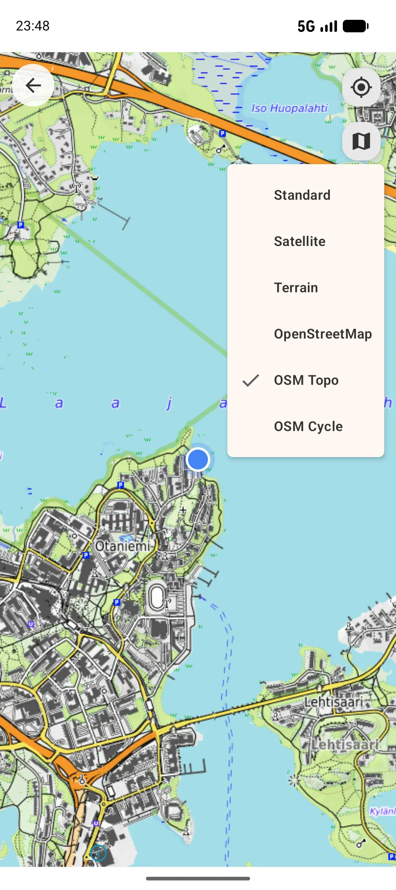

Tutoriel GPX
Comment enregistrer et exporter des traces GPX sur Android
Le GPX est un format de fichier de parcours portable utilisé par les applications de cartographie, les outils de plein air, les logiciels SIG et les archives de voyage. GPS Logger enregistre les parcours sur Android, les sauvegarde sur votre appareil, puis exporte en GPX ou KML quand vous avez besoin d'une copie.

1. Installer GPS Logger
Installez GPS Logger: Private Tracker depuis Google Play. Aucun compte n'est nécessaire pour enregistrer des parcours.
2. Autoriser les permissions de localisation
L'enregistrement GPS nécessite la permission de localisation. La localisation en arrière-plan permet à l'enregistrement de continuer quand l'application n'est pas visible, l'écran est éteint, ou si le démarrage auto après redémarrage est activé. Android affiche également une notification pendant l'enregistrement.
3. Enregistrer votre parcours
Appuyez sur enregistrer avant une marche, une randonnée, une sortie à vélo, un trajet quotidien, une course, un road trip ou un relevé de terrain. GPS Logger stocke les points de parcours, la distance, la durée et la vitesse localement sur votre téléphone.
4. Arrêter et consulter
Une fois terminé, arrêtez l'enregistrement. Votre parcours apparaît dans l'historique avec une carte, des stats, une vue de la vitesse, une entrée de calendrier et un contexte d'atlas de pays/lieux. L'app affiche l'historique visible et les limites actuelles directement en contexte.
5. Exporter en GPX ou KML
Ouvrez un parcours enregistré, choisissez exporter, puis sauvegardez ou partagez un fichier GPX ou KML via Android. Vous pouvez également créer une sauvegarde ZIP GPX de tout l'historique. L'exportation d'un seul parcours utilise la résolution maximale stockée pour tous les niveaux.
Vous testez un flux de travail cartographique avant votre premier enregistrement ? Téléchargez un petit exemple de marche urbaine GPX.